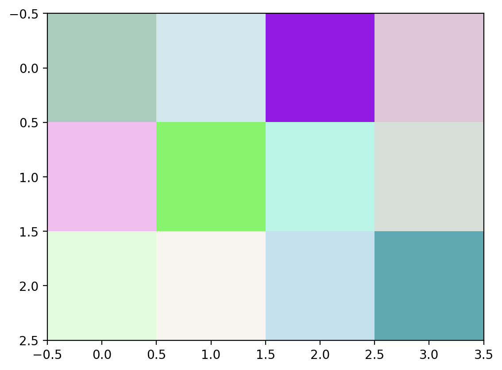

import numpy as np
import matplotlib.pyplot as plt
%matplotlib inline
%config InlineBackend.figure_format = 'retina'
%pip install pydub -qAssign
Creating Arrays
1. Create a 1D array with 20 random integers between 1 and 100.
Hint: Use the np.random.randint() function, specifying the range and size. #### 2. Create a 5x5 matrix where all the border elements are 1, and the inside elements are 0. #### 3. Create a diagonal matrix with values [1, 2, 3, 4] on the diagonal. #### 4. Create an array of shape (3, 3) where each row contains numbers from 1 to 3. Hint: Use np.tile() to repeat arrays along rows or columns. #### 5. Create a 1D array with alternating 0s and 1s of length 10. #### 6. Create a 3x3 matrix with random integers between 10 and 20, and set the datatype to int32.
# @title 1
arr_1D = np.random.randint(1,101,20)
print(arr_1D)[98 32 82 60 17 41 44 93 73 20 29 84 90 12 31 72 92 64 71 56]# @title 2
matrix = np.ones((5,5))
matrix[1:4,1:4] = 0
print(matrix)[[1. 1. 1. 1. 1.]
[1. 0. 0. 0. 1.]
[1. 0. 0. 0. 1.]
[1. 0. 0. 0. 1.]
[1. 1. 1. 1. 1.]]# @title 3
x = (1,2,3,4)
diag_mat = np.diag(x)
print(diag_mat)[[1 0 0 0]
[0 2 0 0]
[0 0 3 0]
[0 0 0 4]]# @title 4
Row1 = np.array([1,2,3])
arr = np.tile(Row1,(3,1))
print(arr)[[1 2 3]
[1 2 3]
[1 2 3]]# @title 5
arr = np.array([0,1])
arr_1D = np.tile(arr,(1,5))
print(arr_1D)[[0 1 0 1 0 1 0 1 0 1]]# @title 6
matrix = np.random.randint(11,20,(3,3),dtype=np.int32)
print(matrix)[[17 15 13]
[16 17 19]
[17 13 18]]Array Attributes
####1. Create a NumPy array of shape (4, 5) filled with random integers between 1 and 10. Now use an appropriate attribute of an array and find the following:
# This is formatted as code- shape of the array
- size of the array
- number of dimensions
- data type
####2. Write a Python function that takes an array as input and returns the number of dimensions (ndim) of the array. Test the function with the following arrays:
- A 1D array with 5 elements.
- A 2D array of size (3x4).
- A 3D array of size (2x3x4).
####3. Create a NumPy array with the elements between 1 to 100 and use the dtype attribute to find out the data type of the elements. Modify the program to create arrays with elements of type float and string, and observe the changes in dtype.
####4. Write a Python function that: 1. Creates a 6×3 array of integers using NumPy. 2. Prints the shape of the array using the shape attribute. 3. Reshapes the array to 3×6 and prints the new shape.
####5. Write a program to: 1. Create an array of any size with all elements being 0 and use the appropriate attribute to print the size (in bytes) of each element in the array. 2. Create an array of any size with elements between 1 to 10 and print the size. 3. Create another array with floating-point numbers of any size and observe how the size changes.
# @title 1
arr = np.random.randint(2,10,(4,5))
print(arr.shape)
print(arr.size)
print(arr.ndim)
print(arr.dtype)(4, 5)
20
2
int64# @title 2
def function(x) :
dim = np.ndim(x)
return dim
arr_1D = np.random.randint(0,10,(5,))
print(function(arr_1D))
arr_2D = np.random.randint(0,10,(3,4))
print(function(arr_2D))
arr_3D = np.random.randint(0,10,(2,3,4))
print(function(arr_3D))1
2
3# @title 3
arr_int = np.arange(1,101,dtype=int)
print(arr_int.dtype)
arr_float = np.arange(1,101,dtype=float)
print(arr_float.dtype)
arr_str = np.array([str(i) for i in range(1,101)])
print(arr_str.dtype)int64
float64
<U3# @title 4
def fun(arr):
arr = np.random.randint(1,10,(6,3),int)
print('original array :\n',arr)
print('shape of original array =',arr.shape)
arr_reshape = arr.reshape((3,6))
print('reshaped array :\n',arr_reshape)
print('shape of reshaped array =',arr_reshape.shape)
fun(arr)original array
: [[9 3 2]
[9 2 1]
[6 6 4]
[2 8 2]
[3 1 2]
[6 8 8]]
shape of original array = (6, 3)
reshaped array
: [[9 3 2 9 2 1]
[6 6 4 2 8 2]
[3 1 2 6 8 8]]
shape of reshaped array = (3, 6)# @title 5
arr_zeroes = np.zeros(10)
print('size of elements in arr_zeroes :',arr.itemsize)
arr_int = np.random.randint(1,10,10,int)
print('size of elements in arr_int :',arr.itemsize)
list_float = np.arange(1,10,dtype=float)
arr_float = np.array(list_float)
print('size of elements in arr_float :',y.itemsize)size of elements in arr_zeroes : 8
size of elements in arr_int : 8
size of elements in arr_float : 8Sorting and Partioning
####1. Given an array arr, sort the array in ascending order without modifying the original array. Print both the original and sorted arrays.(use np.sort())
####2. You have arr = np.array([50, 30, 40, 20]) and names = np.array([“A”, “B”, “C”, “D”]). Sort the arr values in ascending order and rearrange the names array accordingly.(use np.argsort() to get sorted indices and reorder names)
####3. Write code to find the k smallest elements from the array arr. Print these elements in ascending order.(use np.partition())
####4. Partition the array arr such that all elements smaller than a particular number(user input) appear before those greater than or equal to that number. Print the partitioned array.(use np.partition() to find the pivot value’s index)
####5. Sort each row of a 2D array arr in ascending order.(use np.sort() with axis parameter)
####6. Print k largest elements of an array arr in descending order.(use np.partition() to find top k elements)
####7. Given an array arr(containing possible negative values), sort the array in ascending order based on the absolute values of the elements. Print the sorted array.(use np.argsort() with a custom key for absolute values)
####8. Given an array arr, sort only the elements greater than k in ascending order, keeping the other elements in their original positions.(create a mask to find elements greater than k, use np.sort() to sort them then reassign the sorted values back to their original indices in the array)
# @title 1
arr = [5,45,63,56,43,45,3,45]
print("Sorted copy:", np.sort(arr))
print("Original:",arr)Sorted copy: [ 3 5 43 45 45 45 56 63]
Original: [5, 45, 63, 56, 43, 45, 3, 45]# @title 2
arr = np.array([50, 30, 40, 20])
names = np.array(["A", "B", "C", "D"])
sort_indices = np.argsort(arr)
print('sorted array =',arr[sort_indices])
print('sorted names =',names[sort_indices])sorted array = [20 30 40 50]
sorted names = ['D' 'B' 'C' 'A']# @title 3
k = int(input('Enter a Number :'))
arr = np.random.randint(1,100,20)
partitioned_arr = np.partition(arr,k)
print(np.sort(partitioned_arr[0:k]))Enter a Number :11
[ 3 16 18 26 27 29 33 38 46 47 57]# @title 4
pivot = int(input('Enter the pivot value :'))
arr = np.random.randint(1,100,20)
print('original array =',arr)
partitioned_arr = np.partition(arr,np.searchsorted(arr,pivot))
print('partitioned array =',partitioned_arr)
print('index of the pivot value =',np.searchsorted(partitioned_arr,pivot))Enter the pivot value :40
original array = [46 33 63 56 94 8 4 11 52 10 82 50 27 28 1 37 58 57 37 66]
partitioned array = [ 8 1 11 4 10 27 28 33 37 37 46 50 82 52 94 56 58 57 63 66]
index of the pivot value = 10# @title 5
arr_2D = np.random.randint(1,200,(3,3))
sort_arr_2D= np.sort(arr_2D,axis = 1)
print(sort_arr_2D)[[ 43 137 147]
[ 81 114 134]
[ 44 53 115]]# @title 6
arr = np.random.randint(1,200,30)
k = int(input('Enter the value of k :'))
partitioned_arr = np.partition(arr,30-k)
final_arr = partitioned_arr[30-k:]
reverse_final_arr = final_arr[::-1]
print(arr)
print(reverse_final_arr)Enter the value of k :14
[106 167 170 57 100 155 81 83 107 132 186 152 189 14 4 99 65 162
81 172 116 153 41 119 167 173 53 24 102 11]
[186 172 189 173 170 167 162 167 155 153 132 152 119 116]# @title 7
og_arr = np.random.randint(-200,200,size = 20)
final_arr = np.argsort(np.abs(og_arr))
print(og_arr)
print(og_arr[final_arr])[ -77 -193 -135 -124 -130 -23 -111 125 -45 13 68 -14 -139 -144
-42 -111 -103 -9 -29 -129]
[ -9 13 -14 -23 -29 -42 -45 68 -77 -103 -111 -111 -124 125
-129 -130 -135 -139 -144 -193]# @title 8
arr = np.random.randint(1,20,size=(10))
print(arr)
k = int(input('Enter the value of k :'))
mask = arr > k
print(mask)
print(arr[mask])
arr[mask]=np.sort(arr[mask])
print('ascended_array :',arr)[19 1 6 6 7 11 7 7 5 11]
Enter the value of k :10
[ True False False False False True False False False True]
[19 11 11]
ascended_array : [11 1 6 6 7 11 7 7 5 19]Indexing and slicing
1. 2D Array Indexing
Consider the following 2D array: arr_2d = np.array([[5, 10, 15], [20, 25, 30], [35, 40, 45]]) - Access the element at row index 1 and column index 2. - Extract the first row. - Extract the last column.
arr_2d = np.array([[5, 10, 15], [20, 25, 30], [35, 40, 45]])
print('element in R1 and C2 =',arr_2d[1,2])
first_row = arr_2d[:1,:]
print('First Row :\n',first_row)
last_clm = arr_2d[:,2:]
print('Last Colum:\n',last_clm)element in R1 and C2 = 30
First Row :
[[ 5 10 15]]
Last Colum:
[[15]
[30]
[45]]2. Boolean Indexing
Given an array arr = np.array([2, 5, 8, 11, 14, 17, 20]), use boolean indexing to: - Extract all values greater than 10. - Replace all values greater than 15 with -1.
arr = np.array([2, 5, 8, 11, 14, 17, 20])
greater_10 = arr[arr > 10]
print('Values greater than 10 =',greater_10)
arr[arr > 15] = -1
print('After replacing =',arr)Values greater than 10 = [11 14 17 20]
After replacing = [ 2 5 8 11 14 -1 -1]3. Fancy Indexing
Using the 2D array arr_2d = np.array([[5, 10, 15], [20, 25, 30], [35, 40, 45]]), write code to:
Select the elements at positions (0,2), (1,1), and (2,0).
Use fancy indexing to create a submatrix with rows 0 and 2, and columns 1 and 2.
Hint:
For 1st part, use arrays of row and column indices
For 2nd part, you can create a submatrix using fancy indexing by using np.newaxis to match the dimensions
arr_2d = np.array([[5, 10, 15], [20, 25, 30], [35, 40, 45]])
print('Element at pos (0,2):',arr_2d[0,2])
print('Element at pos (1,1):',arr_2d[1,1])
print('Element at pos (2,0):',arr_2d[2,0])
sub_matrix = arr_2d[::2,1:3]
print('Sub Matrix :\n',sub_matrix)Element at pos (0,2): 15
Element at pos (1,1): 25
Element at pos (2,0): 35
Sub Matrix :
[[10 15]
[40 45]]4. Slicing 1D array
Given the array arr = np.array([1, 3, 5, 7, 9, 11, 13, 15]), write code to:
- Extract the first 4 elements.
- Extract every second element from the entire array.
- Extract elements from index 2 to the end, stepping by 2.
arr = np.array([1, 3, 5, 7, 9, 11, 13, 15])
print('First 4 elements :',arr[:4])
print('Every 2nd element :',arr[1::2])
print('elements from index 2 to the end, stepping by 2 :',arr[2::2])First 4 elements : [1 3 5 7]
Every 2nd element : [ 3 7 11 15]
elements from index 2 to the end, stepping by 2 : [ 5 9 13]5. Slicing a 2D Array
Given the following 2D array: arr_2d = np.array([[10, 20, 30, 40], [50, 60, 70, 80], [90, 100, 110, 120]]) - Slice and print the last two columns of 1st row. - Slice and print the last row, reversed.
arr_2d = np.array([[10, 20, 30, 40], [50, 60, 70, 80], [90, 100, 110, 120]])
x = arr_2d[:1,-2:]
print(' last two columns of 1st row :',x)
y = arr_2d[-1::,::-1]
print('Last Row,Reversed :',y) last two columns of 1st row : [[30 40]]
Last Row,Reversed : [[120 110 100 90]]6. Handling Out-of-Range Indices in Slicing vs. Indexing
Given the array: arr = np.array([10, 20, 30, 40, 50])
What will be the output of the following slicing operations? Explain why they work, even though some indices are out of range.
print(arr[2:10])
print(arr[-10:3])
Compare the behavior of slicing to accessing a single element with an out-of-range index (e.g., arr[10]). Why does slicing not raise an error in these cases, but indexing does?
arr = np.array([10, 20, 30, 40, 50])
print(arr[2:10])
#If the given 'STOP' index is exceeding the index of the final element present in the array,then the system considers upto the last element.
print(arr[-10:3])
#If the given 'START' index is less than the index of the first element present in the array,then the system considers from the first element.
# Slicing is more flexible that indexing. This is the reason for slicing not showing error.[30 40 50]
[10 20 30]7. Work with an Audio File
Download the audio file from the following link: Simple Logo - Pixabay. Load the audio file using pydub and complete the following tasks:
Extract the first second of the audio and plot its waveform.
- Hint: Use the frame rate to calculate how many samples are in 1 second, and use slicing to extract this part.
Extract the last second of the audio and plot its waveform.
Combine the samples from the first second and the last second into a new array and plot the combined waveform.
Hint: Use NumPy’s np.concatenate() function to merge the two slices.
from email.mime import audio
from pydub import AudioSegment
import os
audio_path = "C:/Users/ROHIT REDDY MARRI/Downloads/simple logo.mp3"
audio = AudioSegment.from_file(audio_path)Reshaping in NumPy
####1. Create a 2D array of shape (3, 5). Flatten it into a 1D array and then reshape it back into a (5, 3) array.
####2. Create a 1D array
arr = np.array([1, 2, 3, 4, 5])####Reshape arr into (5,1), then convert to (5,) and then convert it into (1,5).
####3. Create a 1D NumPy array with values ranging from 1 to 100. Reshape it into a (10, 10) matrix. Apply ‘.ravel()’ and ‘.flatten()’ on the matrix and modify the original matrix. Compare the outputs of both methods and explain the difference in memory sharing.
####4. Generate a 5x5 NumPy matrix representing pixel intensities from an image. Use slicing to extract the central 3x3 section of the matrix and flatten it. How does reshaping impact the spatial relationships of the pixels?
####5. Create a 3-channel RGB image as a NumPy array of shape (3, 4, 4) with random integer values between 0 and 255. Flatten the image using ‘.reshape()’ and reshape it back to its original shape. Explain the order of pixel data stored and how reshaping affects the channel structure.
# @title 1
arr_2D = np.random.randint(1,10,(3,5))
print("original array:\n",arr_2D)
flatten_arr_2D = arr_2D.flatten()
print("flattened aray :\n",flatten_arr_2D)
reshape_arr = flatten_arr_2D.reshape((5,3))
print("reshaped array :\n",reshape_arr)original array:
[[5 4 7 6 4]
[6 9 9 1 5]
[4 4 1 3 3]]
flattened aray :
[5 4 7 6 4 6 9 9 1 5 4 4 1 3 3]
reshaped array :
[[5 4 7]
[6 4 6]
[9 9 1]
[5 4 4]
[1 3 3]]# @title 2
arr = np.array([1, 2, 3, 4, 5])
print("reshaped array :\n",arr.reshape(5,1))
print("flattened array :\n",arr.reshape(5,1).flatten())
print("final array:\n",arr.reshape(1,5))reshaped array :
[[1]
[2]
[3]
[4]
[5]]
flattened array :
[1 2 3 4 5]
final array:
[[1 2 3 4 5]]# @title 3
reshaped_1D_arr = np.arange(1,101).reshape((10,10))
print(reshaped_1D_arr)
ravel_arr = reshaped_1D_arr.ravel()
flatten_arr = reshaped_1D_arr.flatten()
reshaped_1D_arr[3:] = 0
print('Ravelled array :\n',ravel_arr)
print('Flattened array :\n',flatten_arr)
# Ravel fuction is just the view of an array,they both share the same memory. So, the changes made to any one of them will also change the other.
#Flatten function completely makes an another flattened copy of the original array and they both have different individual memory. Since it is a copy, making changes in one does not affect the other.[[ 1 2 3 4 5 6 7 8 9 10]
[ 11 12 13 14 15 16 17 18 19 20]
[ 21 22 23 24 25 26 27 28 29 30]
[ 31 32 33 34 35 36 37 38 39 40]
[ 41 42 43 44 45 46 47 48 49 50]
[ 51 52 53 54 55 56 57 58 59 60]
[ 61 62 63 64 65 66 67 68 69 70]
[ 71 72 73 74 75 76 77 78 79 80]
[ 81 82 83 84 85 86 87 88 89 90]
[ 91 92 93 94 95 96 97 98 99 100]]
Ravelled array :
[ 1 2 3 4 5 6 7 8 9 10 11 12 13 14 15 16 17 18 19 20 21 22 23 24
25 26 27 28 29 30 0 0 0 0 0 0 0 0 0 0 0 0 0 0 0 0 0 0
0 0 0 0 0 0 0 0 0 0 0 0 0 0 0 0 0 0 0 0 0 0 0 0
0 0 0 0 0 0 0 0 0 0 0 0 0 0 0 0 0 0 0 0 0 0 0 0
0 0 0 0]
Flattened array :
[ 1 2 3 4 5 6 7 8 9 10 11 12 13 14 15 16 17 18
19 20 21 22 23 24 25 26 27 28 29 30 31 32 33 34 35 36
37 38 39 40 41 42 43 44 45 46 47 48 49 50 51 52 53 54
55 56 57 58 59 60 61 62 63 64 65 66 67 68 69 70 71 72
73 74 75 76 77 78 79 80 81 82 83 84 85 86 87 88 89 90
91 92 93 94 95 96 97 98 99 100]# @title 4
matrix = np.random.randint(0,256,(5,5))
print(matrix)
sub_matrix = matrix[1:4,1:4]
print(sub_matrix)
flattened_sub_matrix = sub_matrix.flatten()
print(flattened_sub_matrix)
# While reshaping ,it converts 2D array into a 1D array and this will disrupt the spatial arrangement of the pixels. Hence this will affect programs that depend on spatial configurations.[[122 103 57 17 125]
[119 251 149 164 109]
[207 58 139 123 183]
[ 85 2 62 170 85]
[161 69 135 174 123]]
[[251 149 164]
[ 58 139 123]
[ 2 62 170]]
[251 149 164 58 139 123 2 62 170]# @title 5
image = np.random.randint(0,256,(3,4,4))
print(image)
plt.imshow(image)
plt.show()
flatten_image = image.reshape(-1)
print(flatten_image)
final_image = flatten_image.reshape((3,4,4))
print(final_image)
plt.imshow(final_image)
plt.show()
# The pixel data of channels is stored in the continuous 1D array where each channel has its own 1D array. When we flaten the image all the channels align in a single 1D array one by one. If it reshaped again then they return to their original positions.
#Reshaping doesn't affect the channel structure, but just changees the veiw point of the structure.[[[127 179 160 170]
[184 221 225 169]
[142 20 226 248]
[142 69 129 76]]
[[206 37 201 75]
[134 243 105 250]
[ 55 225 187 87]
[168 188 170 115]]
[[146 242 139 71]
[156 107 46 18]
[ 76 163 200 83]
[ 70 157 166 220]]]
[127 179 160 170 184 221 225 169 142 20 226 248 142 69 129 76 206 37
201 75 134 243 105 250 55 225 187 87 168 188 170 115 146 242 139 71
156 107 46 18 76 163 200 83 70 157 166 220]
[[[127 179 160 170]
[184 221 225 169]
[142 20 226 248]
[142 69 129 76]]
[[206 37 201 75]
[134 243 105 250]
[ 55 225 187 87]
[168 188 170 115]]
[[146 242 139 71]
[156 107 46 18]
[ 76 163 200 83]
[ 70 157 166 220]]]Universal Functions
Q1) Given an array x = [1, 4, 9, 16, 25], compute the square root of each element in the array and print the result.
Q2) Create an array angles =[0, \(\frac{\pi}{2}\), \(\pi\), \(\frac{3\pi}{2}\)] , calculate the sine of each angle and print the result.
Q3) Given two arrays a =[True, False, True] and b = [False, False, True], perform an element-wise logical AND operation and print the result.
Q4) Create two arrays x = [1, 2, 3, 4] and y = [2, 2, 3, 5], perform an element-wise comparison (x < y) and print the result.
Q5) Create an array x =[-2, -1, 0, 1, 2, 3, 4], compute the following element-wise operation:
- If an element is negative, square it.
- If an element is non-negative, compute its exponential. Print the resulting array.
# @title 1
x = np.array([1,4,9,16,25])
sqrt_x = np.sqrt(x)
print("after applying square root =",sqrt_x)after applying square root = [1. 2. 3. 4. 5.]# @title 2
angles = np.array([0, np.pi/2, np.pi, 3*np.pi/2])
sin_values = np.sin(angles).astype(int)
print(sin_values)[ 0 1 0 -1]# @title 3
a = np.array([True, False, True])
b = np.array([False, False, True])
print('after performing element wise and operation:',a & b)after performing element wise and operation: [False False True]# @title 4
x = np.array([1, 2, 3, 4])
y = np.array([2, 2, 3, 5])
print("element wise comparision :",x < y)element wise comparision : [ True False False True]# @title 5
x = np.array([-2, -1, 0, 1, 2, 3, 4])
mask1 = x < 0
mask2 = x >= 0
result = np.where(mask1, x**2, np.exp(x))
print(result)[ 4. 1. 1. 2.71828183 7.3890561 20.08553692
54.59815003]Aggregations
####1. Generate a random array of size 10. calculate the following: - Print the array - The sum of all elements. - The mean of the array. - The standard deviation. - Find 5\(*\)Minimum -3\(*\)Maximum
####2. Generate a 4x5 matrix with random integers between 1 and 50. - Print the matrix. - Compute the mean of all elements in the matrix. - Compute the sum of each row in the matrix.
####3. Generate a random 3x3 matrix with random integers between 1 to 10 - Find the minimum value in each column and store it in a separate list min. - Find the maximum value in each row and store it in a separate list max. - Find the value of minimum of list max - maximum of list min.
####4. Given the array : data = np.array([15, 25, 35, 45, 55, 65]): - Find the minimum value. - Subtract this minimum value from all elements of the array and then calculate the mean of the resulting array.
####5. Given the array : arr = np.array([3, 5, 7, 9, 11]): - Compute the cumulative sum of the elements. - Compute the cumulative product of the elements.
####6. Imagine you have a dataset representing the scores of 4 students in 3 subjects: scores = np.array([[85, 92, 78], [88, 76, 95], [91, 89, 82], [75, 85, 88]]) - Compute the average score for each student. - Compute the highest score in each subject. - Determine the overall average score for all students across all subjects.
# @title 1
arr = np.random.randint(1,200,size = 10)
print('array :',arr)
print('sum =',np.sum(arr))
print('mean =',np.mean(arr))
print('standard deviation =',np.std(arr))
print('5 ∗ Minimum -3 ∗ Maximum =',5*np.min(arr)-3*max(arr))array : [ 57 54 124 113 2 69 93 74 133 82]
sum = 801
mean = 80.1
standard deviation = 36.6781951573411
5 ∗ Minimum -3 ∗ Maximum = -389# @title 2
matrix = np.random.randint(2,50,(4,5))
print('matrix :',matrix)
print('mean =',np.mean(matrix))
sum = np.sum(matrix,axis = 1)
print('sum of each row =',sum)matrix : [[15 10 25 21 27]
[ 8 43 43 22 14]
[48 17 5 33 47]
[38 11 24 43 4]]
mean = 24.9
sum of each row = [ 98 130 150 120]# @title 3
mtrix = np.random.randint(1,11,(3,3))
print('matrix :\n',matrix)
min = list(np.min(matrix, axis = 0))
max = list(np.max(matrix, axis = 1))
min.sort(reverse = True)
max.sort()
print('list min:',min)
print('list max:',max)
print('value of minimum of list max - maximum of list min :',max[0]-min[0])matrix :
[[15 10 25 21 27]
[ 8 43 43 22 14]
[48 17 5 33 47]
[38 11 24 43 4]]
list min: [21, 10, 8, 5, 4]
list max: [27, 43, 43, 48]
value of minimum of list max - maximum of list min : 6# @title 4
data = np.array([15, 25, 35, 45, 55, 65])
min_value = np.min(data)
print("Min Value =",min_value)
mean = (data - min_value).mean()
print('Mean = ',mean)Min Value = 15
Mean = 25.0# @title 5
arr = np.array([3, 5, 7, 9, 11])
cum_sum = np.cumsum(arr)
cum_product = np.cumprod(arr)
print('cumulative sum=',cum_sum)
print('cumulative product =',cum_product)cumulative sum= [ 3 8 15 24 35]
cumulative product = [ 3 15 105 945 10395]# @title 6
scores = np.array([[85, 92, 78], [88, 76, 95], [91, 89, 82], [75, 85, 88]])
avg_per_student = np.mean(scores, axis=1)
print("Average score for each student:", avg_per_student)
highest_per_subject = np.max(scores, axis=0)
print("Highest score in each subject:", highest_per_subject)
overall_avg = np.mean(scores)
print("Overall average score:", overall_avg)Average score for each student: [85. 86.33333333 87.33333333 82.66666667]
Highest score in each subject: [91 92 95]
Overall average score: 85.33333333333333Broadcasting in NumPy
####1. Given two arrays:
A = np.array([[1, 2, 3], [4, 5, 6], [7, 8, 9]]) (shape: (3, 3)) B = np.array([10, 20, 30]) (shape: (3,)) Perform elementwise addition of A and B using broadcasting and print the result.
What is the resulting shape?
####2. Write a function check_broadcasting(shape1, shape2) that:
Accepts two shapes as input and checks if they are broadcast-compatible. Use the function to test the following shape pairs: (3, 4) and (4,) (2, 1, 5) and (3, 5) (2, 3) and (2,)
For each case:
State whether broadcasting is possible.
If possible, state the resulting shape of the operation
####3. Create a 2D array A of shape (3, 5) with random integers between 1 and 10. Create a 1D array B of shape (5,) with random integers between 1 and 5. Use broadcasting to subtract B from each row of A and print the result.
####4. Create a 3D array A with shape (2, 4, 3) filled with random integers between 0 and 10.
- Create an array B of shape (4, 3) containing a constant value of 5.
- Use broadcasting to add B to each 2D array slice of A.
- Print the result
####5. : You are given a grayscale image of shape (32, 32), where each pixel value is an integer. You want to apply a scaling factor of 0.5 to all the pixel values using broadcasting.
- Use broadcasting to scale the image by multiplying it with the scaling factor 0.5.
- Verify that the pixel values of the image are halved by printing the scaled image.
####6. Calculate the distance between an observation point and a set of code points (codes). The goal is to find the closest code to the observation by calculating the Euclidean distance between each code and the observation.
- Given two arrays :
codes = np.array([ [1.0, 2.0, 3.0], [4.0, 5.0, 6.0], [7.0, 8.0, 9.0], [1.0, 1.0, 1.0], [2.0, 3.0, 4.0]])
observation = np.array([3.0, 3.0, 3.0])
- Use broadcasting to calculate the squared Euclidean distance between the observation and each code.
- Find and print the index of the closest code to the observation.
- Print the distance between the observation and the closest code.
HINT : use np.argmin() to find the index of the closest code
# @title 1
A = np.array([[1, 2, 3], [4, 5, 6], [7, 8, 9]])
B = np.array([10, 20, 30])
added_result = A + B
print(added_result)
print(added_result.shape)[[11 22 33]
[14 25 36]
[17 28 39]]
(3, 3)# @title 2
def check_broadcasting(shape1, shape2):
try:
result = np.broadcast(np.empty(shape1), np.empty(shape2))
return 'can be Broadcasted', "shape =",result.shape
except ValueError:
return "can't be Broadcasted", None
print('(3,4) and (4,) ',check_broadcasting((3,4),(4,)))
print('(2,1,5) and (3,5) ',check_broadcasting((2,1,5),(3,5)))
print('(2,3) and (2,) ',check_broadcasting((2,3),(2,)))(3,4) and (4,) ('can be Broadcasted', 'shape =', (3, 4))
(2,1,5) and (3,5) ('can be Broadcasted', 'shape =', (2, 3, 5))
(2,3) and (2,) ("can't be Broadcasted", None)# @title 3
A = np.random.randint(2,10,(3,5))
print(A)
B = np.random.randint(1,5,(5,))
print(B)
#subtracting B from each row of A is same as subtracting B from A.
print('A - B =',A-B)[[4 2 6 5 6]
[7 3 5 9 8]
[7 5 8 5 2]]
[1 3 3 1 1]
A - B = [[ 3 -1 3 4 5]
[ 6 0 2 8 7]
[ 6 2 5 4 1]]# @title 4
A = np.random.randint(1,10,(2,4,3))
print('A :\n',A)
B = np.full((4,3),5)
print('B :\n',B)
print("Result of A + B (after broadcasting):\n",A+B)A :
[[[7 9 4]
[9 8 1]
[9 6 4]
[9 6 2]]
[[7 8 9]
[9 7 8]
[1 1 5]
[2 4 4]]]
B :
[[5 5 5]
[5 5 5]
[5 5 5]
[5 5 5]]
Result of A + B (after broadcasting):
[[[12 14 9]
[14 13 6]
[14 11 9]
[14 11 7]]
[[12 13 14]
[14 12 13]
[ 6 6 10]
[ 7 9 9]]]# @title 5
image = np.random.randint(0,256,(32,32))
print('Original Image :\n',image)
scale_factor = 0.5
scaled_image = image*scale_factor
print('Scaled Image :\n',scaled_image)Original Image :
[[244 44 118 ... 216 220 20]
[ 77 190 186 ... 250 0 255]
[ 22 243 158 ... 254 248 81]
...
[ 54 123 136 ... 221 173 231]
[136 163 7 ... 229 161 166]
[140 76 73 ... 144 58 155]]
Scaled Image :
[[122. 22. 59. ... 108. 110. 10. ]
[ 38.5 95. 93. ... 125. 0. 127.5]
[ 11. 121.5 79. ... 127. 124. 40.5]
...
[ 27. 61.5 68. ... 110.5 86.5 115.5]
[ 68. 81.5 3.5 ... 114.5 80.5 83. ]
[ 70. 38. 36.5 ... 72. 29. 77.5]]# @title 6
codes = np.array([[1.0, 2.0, 3.0], [4.0, 5.0, 6.0], [7.0, 8.0, 9.0], [1.0, 1.0, 1.0], [2.0, 3.0, 4.0]])
observation = np.array([3.0, 3.0, 3.0])
diff = codes - observation
squared_distances = np.sum(diff**2, axis=1)
closest_index = np.argmin(squared_distances)
closest_distance = squared_distances[closest_index]**0.5
print(f"The index of the closest code: {closest_index}")
print(f"The Euclidean distance to the closest code: {closest_distance}")The index of the closest code: 4
The Euclidean distance to the closest code: 1.4142135623730951Concatenation
- Write a program to vertically stack arrays using
np.vstackand print the result: (Use any three 1D arrays)
- Write a program to horizontally stack arrays using
np.hstack. Print the result: (Use any three 1D arrays)
- Given two 2D arrays of the same row size, horizontally stack them using
np.hstackand print the result:
m = np.array([[2, 4], [3, 6]])
n = np.array([[4, 8], [5, 10]])
- Using
np.vstack, stack the following arrays vertically and print the results:
a = np.array([11, 12, 13])
b = np.array([[14, 15, 16], [17, 18, 19]])
- Concatenate the following 2D arrays along different axes using
np.concatenate. Demonstrate how to concatenate them along axis 0 and axis 1.
x = np.array([[1, 2], [3, 4]])
y = np.array([[5, 6], [7, 8]])
z = np.array([[9, 10], [11, 12]])
# @title 1
arr1 = np.array([1,2,3,4])
arr2 = np.array([5,6,7,8])
arr3 = np.array([9,0,1,2])
print('VStack :\n', np.vstack([arr1,arr2,arr3]))VStack :
[[1 2 3 4]
[5 6 7 8]
[9 0 1 2]]# @title 2
arr1 = np.array([1,2,3,4])
arr2 = np.array([5,6,7,8])
arr3 = np.array([9,0,1,2])
print('HStack :\n', np.hstack([arr1,arr2,arr3]))HStack :
[1 2 3 4 5 6 7 8 9 0 1 2]# @title 3
m = np.array([[2, 4], [3, 6]])
n = np.array([[4, 8], [5, 10]])
print('HStack :\n',np.hstack([m,n]))HStack :
[[ 2 4 4 8]
[ 3 6 5 10]]# @title 4
a = np.array([11, 12, 13])
b = np.array([[14, 15, 16], [17, 18, 19]])
print('VStack :\n',np.vstack([a,b]))VStack :
[[11 12 13]
[14 15 16]
[17 18 19]]# @title 5
x = np.array([[1, 2], [3, 4]])
y = np.array([[5, 6], [7, 8]])
z = np.array([[9, 10], [11, 12]])
print('Vertical_concatenated_form :\n',np.concatenate([x,y,z],axis = 0))
print('Horizontal_concatenated_form :\n',np.concatenate([x,y,z],axis = 1))Vertical_concatenated_form :
[[ 1 2]
[ 3 4]
[ 5 6]
[ 7 8]
[ 9 10]
[11 12]]
Horizontal_concatenated_form :
[[ 1 2 5 6 9 10]
[ 3 4 7 8 11 12]]Boolean Masking
Use Boolean masking to filter elements from a 1D array: Write a program to create a 1D array and use Boolean masking to filter out all elements greater than 5.
Apply a Boolean mask to a 2D array: Given the 2D array below, create a Boolean mask to select all elements greater than 10 and print the masked elements.
arr = np.array([[5, 12, 18], [7, 1, 3], [11, 6, 14]])Create a Boolean mask using a condition on an array: Create a 1D array of integers from 0 to 10. Use a Boolean mask to filter out all even numbers and print the result.
Example:arr = np.arange(11)Combine Boolean masks using logical operations: Given the array below, create and combine two Boolean masks:
One mask selects elements greater than 5. The other mask selects elements divisible by 3. Combine the masks using logical AND and print the result. Example:arr = np.array([1, 3, 6, 9, 12, 15])Mask elements in a 2D array and replace them: Write a program to replace all elements less than 5 in the 2D array below with 0 using Boolean masking.
Count elements satisfying a condition using Boolean masks: Write a program to count how many elements in the array below are greater than 5.
# @title 1
arr_1D = np.random.randint(1,10,(10,))
print(arr_1D)
mask = arr_1D > 5
filtered_arr_1D = arr_1D[mask]
print(filtered_arr_1D)[1 8 3 3 4 5 4 7 4 1]
[8 7]# @title 2
arr = np.array([[5, 12, 18], [7, 1, 3], [11, 6, 14]])
mask = arr > 10
masked_elements = arr[mask]
print(masked_elements)[12 18 11 14]# @title 3
arr = np.arange(11)
mask = arr % 2 == 0
even_numbers = arr[mask]
print(even_numbers)[ 0 2 4 6 8 10]# @title 4
arr = np.array([1, 3, 6, 9, 12, 15])
mask1 = arr > 5
mask2 = arr % 3 == 0
combined_mask = mask1 & mask2
filtered_elements = arr[combined_mask]
print(filtered_elements)[ 6 9 12 15]# @title 5
arr_2D = np.random.randint(0,10,(3,3))
mask = arr_2D < 5
arr_2D[mask] = 0
print(arr_2D)[[0 9 7]
[5 7 6]
[6 9 0]]# @title 6
arr = np.array([10, 3, 6, 9, 12, 15])
mask = arr > 5
count = np.sum(mask)
print(count)5